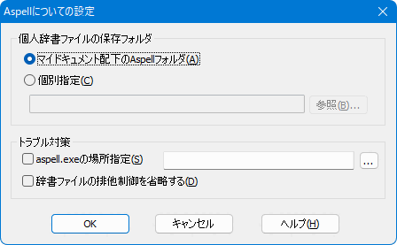

このアドインは、秀丸エディタにスペルチェック機能を追加します。このアドイン自体はフリーソフトウェアになります。
動作条件は以下の通りで、古い秀丸エディタ・OSでは動作しません。
このアドイン自体はスペルチェック機能を持っていません。別途、以下のスペルチェッカーが必要になります。
このアドインが秀丸エディタとスペルチェッカーを連携させることで、秀丸エディタ上でスペルチェックが可能になります。
OSのスペルチェックエンジンを使う場合は、言語パックによってインストールされている言語のスペルチェックが使用できます。 OSの「設定」→「時刻と言語」→「言語」から言語パックをインストールしてください。
GNU Aspellを使う場合は、以下の作業が必要です。
手順の詳細は以下の項目を参照してください。
Windows10以降で、OSのスペルチェックエンジンを使う場合は、アドインのインストールのみです。 GNU Aspell を使う場合は、プログラム本体/辞書ファイルのインストールを行います。
Windows用のGNU Aspellは以下の場所からダウンロード可能です。
「Binaries」にある、「Full installer」をクリックすれば「GNU Aspell」がダウンロード出来ます。
(Aspell-(バージョン番号)-Setup.exeというファイル名になります。2022/03/21現在、「Aspell-0-50-3-3-Setup.exe」です)

GNU Aspell は、プログラム本体だけでは使用できません。チェックする言語に対応した辞書ファイルが必要です。
ここでは例として「英語用辞書」をダウンロードします。プログラム本体と同じ場所で、辞書ファイルもダウンロード出来ます。「英語用辞書」なので、「Precompiled dictionaries:」にある「English」のファイルをダウンロードしてください。
(Aspell-en-(バージョン番号).exeというファイル名でダウンロード出来ます。2022/03/21現在、「Aspell-en-0.50-2-3.exe」です)

インストールは、GNU Aspell のプログラム本体から行い、次に英語辞書ファイルをインストールしてください。
「秀丸スペルチェックアドイン」をダウンロード/インストールを行います。(ストアアプリ版は不要)
インストールする前に、秀丸エディタが起動していれば、常駐秀丸を含め終了させておいた方が良いでしょう。 (常駐秀丸の終了方法は、「[HME0053A]●「常駐秀丸の終了」がわかりません」を参照)
秀まるおのホームページ - ソフトウェア - 秀丸スペルチェックアドイン
2022/03/21現在、以下のバージョンが公開されています。
32bit/64bit共通のインストーラーになっていて、実行後に32bit/64bitの選択が可能です。
32/64bit 両方の秀丸エディタがインストールされていなければ両方有効になる事はありませんが、使用している秀丸エディタと同じ bit数 を選択し、インストールを行ってください。

以上で、秀丸エディタ上でスペルチェックを行うためのソフトのインストールは終了です。
以降は、英語の辞書ファイルを使用している場合の説明になります。
スペルチェックを実行するには、「表示」メニューにある「自動スペルチェック」で設定します。 (「表示」メニューにない場合は、「ファイルタイプ別の設定」から行ってください)

また、「ファイルタイプ別の設定」からも「自動スペルチェック」をON/OFF可能です。

例えば、以下のように「Hidemaru Editor」と入力し、「自動スペルチェック」を有効にします。すると、辞書に登録されている「Editor」は問題ありませんが、辞書にない「Hidemaru」の部分に赤い波線状の下線が引かれます。

この状態になれば、スペルチェックが正常に動作していることになります。ならない場合は、「ファイルタイプ別の設定」から「秀丸スペルチェックアドインの設定」を開き、「aspell.exeの場所指定」を「個別指定」で直接指定してみてください。
スペルチェックの詳細設定は、「ファイルタイプ別の設定」から行います。
自動スペルチェック」のON/OFF
スペルチェックを行う言語の指定
「秀丸スペルチェックアドインの設定」

スペルチェックエンジン
使用するスペルチェックエンジンを選択します。
Aspellの場合は別途設定がありますが、 Aspellを選択しないと「Aspellについての設定」ボタンは有効になりません。

個人辞書ファイルのファイル名
辞書ファイルにない単語を、個人辞書に登録可能です。 (使用しているスペルチェックエンジンによりパスは切り替わります)
「個人辞書ファイルを開く」 ボタンで、個人辞書ファイルを秀丸エディタで開く事が可能です。言語が表示されるので、編集する言語を選択してください。
スペルミス修正ダイアログのフォントサイズ
ダイアログのフォントサイズを設定します。
スペルミス修正ダイアログ位置を固定する
ダイアログの位置を固定したい場合は、チェックをONにしてください。
「スペルミスの色」
スペルミス部分を示す方法を設定できます。デフォルトは赤の波線のアンダーラインになります。

「スペルチェックの対象」
チェックした箇所を、スペルチェック対象にする/しない を設定します。
(画像は加工してつなげた状態。実際は小さいダイアログで表示されます)
個別設定は無理で、まとめてしか設定できません。(チェックした箇所を、対象にするか除外するかのどちらかに設定)

スペルチェックのミスがある箇所に対して、修正が出来ます。
「その他」メニューから「スペルミスの修正」を選ぶと、カーソル位置から後ろにあるスペルミス部分を検索・移動し、「スペルミスの修正」ダイアログが表示されます。 (カーソル以降にスペルミスがない場合は、ファイルの先頭から検索)
頻繁に「スペルミスの修正」を使う場合は、「スペルミスの修正」を「ショートカットキー」や「ツールバー」に登録しておくのが良いでしょう。 (登録方法は、「秀丸マクロのいろはにほへと マクロを実行してみよう」を参照。「ツールバー」に登録する場合は、「すべてのコマンドを表示」にチェックを入れ「その他」から選択する事)
例えば、以下のようなスペルミスがある状態で、「スペルミスの修正」を実行してみます。
「スペルミスの修正」を実行すると、「Hidemaru」が検索され、「スペルミスの修正」ダイアログに「修正の候補」を表示します。スペルミス対象になっている単語に対し、各種処理を行う事が出来ます。

インストーラからインストールを行いましたが、アンインストールは手動で行う必要があります。「プログラムと機能」や「アプリと機能」からはアンインストールできません。手動でアンインストールするには準備が必要なので、「スペルチェックアドイン」のヘルプをよく読む必要があります。
始めに、秀丸エディタを全て終了させた状態にします。
「スペルチェック用の個人辞書ファイル」を必要に応じて削除してください。
他で使っていない場合は、GNU Aspellと辞書を削除します。「プログラムと機能」や「アプリと機能」からアンインストールしてください。
メニューにある「自動スペルチェック」等を表示しないようにするには、レジストリを編集する必要があります。編集箇所は、「スペルチェックアドイン」のヘルプに記載されています。レジストリの編集に自信のない方や、そもそもレジストリの編集方法がわからない場合は、そのままにしておいてください。
最後に、秀丸エディタ本体と同じ場所にある、「HmSpell.dll」、「HmSpell.chm」を削除します。
これでメニューに「自動スペルチェック」等が表示されていても、スペルチェックは動作しません。
スペルチェックアドイン単独で設定をインポート/エクスポートする方法はありません。秀丸エディタの「設定内容の保存/復元」を行えば、秀丸エディタ本体の設定と一緒に、保存/復元出来ます。
設定内容も多くないので、「秀丸スペルチェックアドインの設定」ダイアログを表示させ、設定画面をキャプチャーして保存し、同じように設定すればいいでしょう。
設定画面をキャプチャーするには、ダイアログがアクティブな状態で、[Alt]+[Print Screen]キーを押します。クリップボードにキャプチャされているので、ペイント等に貼り付けて保存してください。